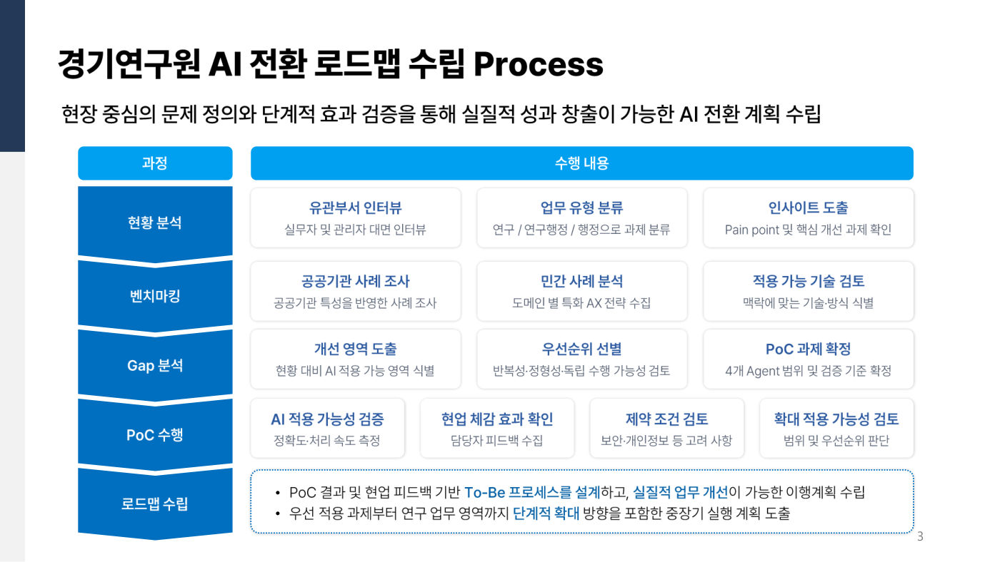
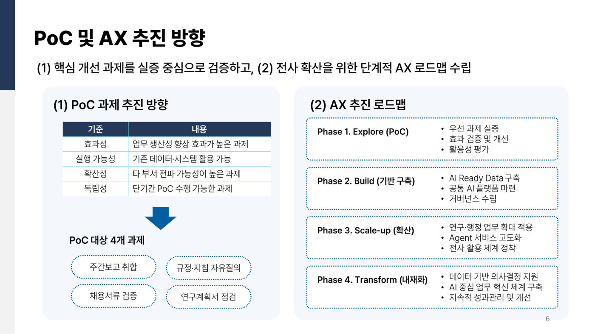

연구원의 반복 행정을 줄이는 AI 에이전트 4종을 5주 만에 검증하고, 기관 내부 이전 방안까지 설계했습니다.
기여도
PoC 기획 총괄주도 2건, 협업 1건
발주
경기도 소재 정책연구기관
기간
2026.04 ~ 2026.09
유형
공공기관 AI 전환 PoC
역할 및 기여도
- [주도]PoC 4종 서비스 흐름과 화면 구조 기획100%
- [주도]Agent별 검증 기준 정의100%
- [협업]PoC 개발 및 검증 진행50%
[주도] 직접 책임지고 수행 / [협업] 다른 담당자와 함께 수행. 오른쪽 숫자는 해당 과업에서 본인 비중
성과
- 4종업무지원 AI 서비스 동시 구축
- 5주기획부터 개발, 검증까지
- 5개 부서현업 인터뷰로 과제 선정
문제와 해결
현장 문제만든 AI
- 매주 13~14개 부서 보고를 손으로 취합주간보고 자동 취합과 누락 알림
- 연구계획서 누락, 오작성으로 반복 보완체크리스트 기반 자동 검토
- 학위, 경력, 논문 검증을 수작업으로채용 서류 자격요건 자동 검증
- 규정이 흩어져 신규 인력 문의가 반복규정과 지침에 답하는 RAG 챗봇
내부 이전 설계
클라우드 PoC→AI-PC 2대로 4종 수용→민감 원본은 내부 보관→비식별 텍스트만 외부 AI로
작업물


산출물
- PoC 수행계획서
- AI 전환 사례 리서치
- 현업 인터뷰 보고서
- 결과보고서
- AI-PC 환경 구성 방안